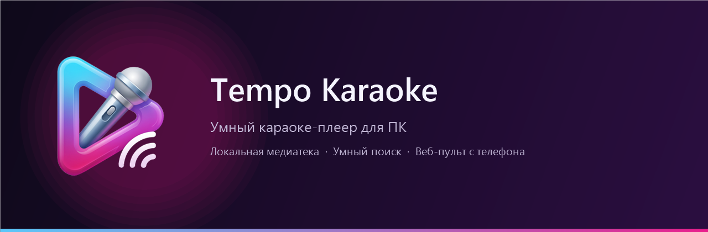

Local library
Index any video folders recursively. SQLite cache, metadata and thumbnails make repeat launches instant.
Tempo Karaoke turns any folder of karaoke videos into a fast, beautiful catalog. Guests search and queue songs from their phones while the video plays on the big screen.

Native WinUI 3 · LibVLCBuilt for large local collections, remote requests and long evenings — without folders, spreadsheets or cloud accounts.
Index any video folders recursively. SQLite cache, metadata and thumbnails make repeat launches instant.
Fuzzy matching, RU/EN transliteration and keyboard-layout correction. Results before the next frame.
Drag-and-drop order, play-next, undo, M3U import/export and a queue that survives restarts.
Guests scan a QR code, search the catalog and order songs. The host controls playback with a PIN.
Detach the video to a TV or projector and keep the control panel on the laptop.
Library, queue, seek, speed, 10-band equalizer, shuffle, repeat and a countdown between songs.
Automatic GitHub release checks, a native toast, an update badge and a silent installer that keeps your data.
Full Russian and English UI, switchable at runtime. Dark, light and system themes.
No media uploads, no account. PINs are stored as PBKDF2 hashes; diagnostic reports mask private paths.
Start the built-in web server, show the QR code and let guests browse the catalog from their browser. You keep control of playback, volume and the queue.
No VLC installation, no media conversion and no account.
Run the per-user installer. .NET and Windows App SDK are bundled.
Point Tempo Karaoke at your karaoke video folder. The library is indexed locally.
Play a song, open the remote and share the QR code with your guests.
Free and open source. The latest installer is published on GitHub Releases.